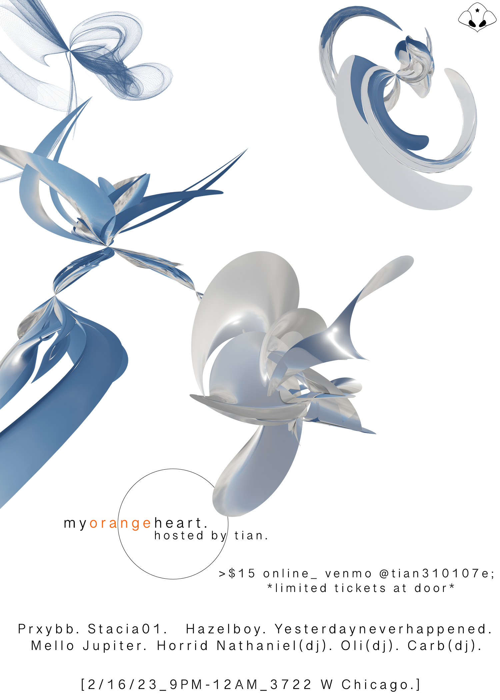
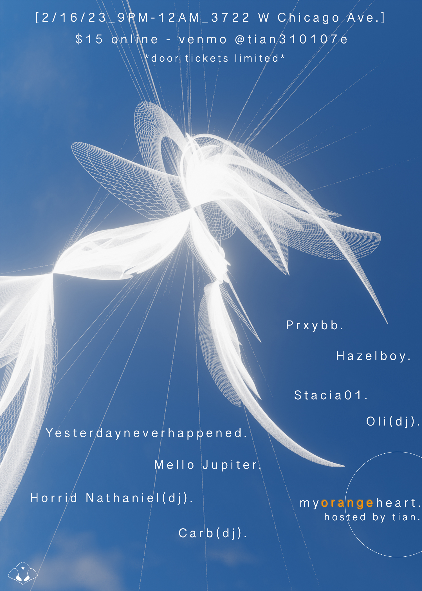

my_orange_heart: project overview
freelance work, February 2023
This early job was a multi-step project for a rave featuring big name DJs in the underground. I made both promotional material in the form of flyers, as well as the live visuals that would play behind the artists during the event.
This was a particularly special community to me, and I wanted to match the feeling I got at the shows with the visuals and the promotions. Most of the lineup was hard trance or techno artists, who were also very prominently "online", a theme which I ran with to make it feel overtly digital. These are 3 of the posters I made promoting the event itself, all made in blender and photoshop. (I didn't know anything about InDesign at this time lol)
poster series


Below are the visuals I made for the event. Again, everything was made in blender along with after effects and premiere, with some real footage captured by myself.